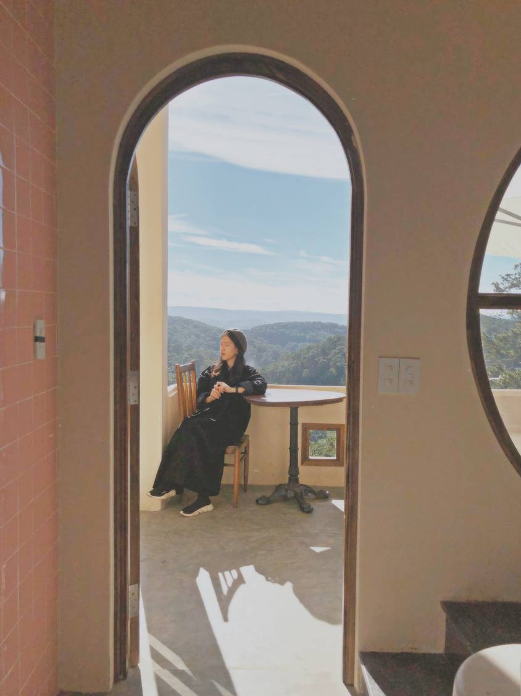

-
1. Địa điểm check in tại Đà Lạt số 1 là “Đỉnh Langbiang”
Langbiang là địa điểm thu hút tất cả du khách khi đến với thành phố Đà Lạt. Cách trung tâm khoảng
12km,cách mực nước biển khoảng 2.169m. Nơi đây được xem là đỉnh núi cao nhất có thể ngắm toàn
cảnh của Đà Lạt.
Ngọn núi này không chỉ là điểm du lịch hấp dẫn mà nó còn gắn liền với câu truyện. Truyền thuyết này kể
về một tình yêu say đắm. Langbiang là cái tên được ghép lại từ câu chuyện của chàng K’lang và nàng
H’biang của dân tộc K’Ho.
Đến với Langbiang du khách sẽ xếp hàng mua vé và di chuyển lên đỉnh bằng xe jeep. Để có thể chiêm ngưỡng được cảnh sương mù phủ kín bạn phải chọn thời điểm để đến. Cái se lạnh của vùng núi vào sáng sớm hoặc xế chiều là thích hợp nhất với bạn.
Khi lên đến đỉnh núi bạn có thể thuê đồng phục dân tộc chụp ảnh kỉ niệm. Điều cần lưu ý khi đến với Langbiang là mỗi du khách nên chuẩn bị cho mình một cây dù. Trên đỉnh cao sẽ dễ có những cơn mưa không thể đoán trước được. -
2. "Tường vàng" đầy hoài niệm bên trong chợ Đà Lạt
Mình mới phát hiện ra góc này ngay trong chợ Đà Lạt rất hợp để chụp kiểu minimal lẫn đậm chất đời sống Đà Lạt luôn này. Đoạn cầu thang này là 2 cầu thang song song với lối đi đối ngược nhau nên người chụp sẽ đi 1 hướng còn mẫu sẽ vào bằng hướng ngược lại đó nha. Không cần phải xếp hàng ở khu “Hong Kong bên hông chợ Đà Lạt” nữa, với địa điểm mới này nếu nhanh chân bạn sẽ kịp có ngay bộ hình độc đáo riêng trước quá đông nè.
Chỉ đường:
Từ tiệm trái cây bên hông chợ cũ hỏi lối vào cầu thang lên chợ quần áo tầng 2 là sẽ thấy. Hoặc ngược lại khi đi từ phía tầng trên chợ cũ xuống, đoạn “Hong Kong” ý, đi vào hẳn bên trong sẽ thấy cầu thang này luôn.
-
3.Quán trà bánh thuần Việt tựa Hội An thu nhỏ
Địa chỉ: Yên Cafe 264 Phan Đình Phùng
Góc quán vintage ngay trung tâm Đà Lạt và món bánh crepe sầu riêng đặc biệt thơm ngon đây!
Xin bật mí một chiếc quán xinh cho dịp Tết đến xuân về đúng chuẩn thuần Việt với đủ các tiêu chí: bánh ngon, quán đẹp, thích hợp đi cả gia đình hoặc họp lớp.
Mình gợi ý nhất định phải thử món bánh crepe sầu riêng, thơm ngon và ngọt vị tự nhiên cắn vào như cắn múi sầu riêng ngập miệng thiệt đó!
Tính ra ở Đà Lạt mình thấy có bánh ngọt ở Goute (Nguyễn Văn Trỗi) với ở đây là mình ăn trong vòng 1 nốt nhạc được thôi.
Không gian thuần Việt, kiểu Hội An thu nhỏ nhưng tinh tế và không hề sến súa đâu, do biết cách chọn nội thất xịn nên nhìn sang và có nhiều góc lên hình xịn lắm. Nhân dịp năm Tý mặc áo dài ghé đây chụp vài pô thì còn gì bằng, nhất là bức tranh đám cưới "Tý" nè! Không gian quán rộng với 3 tầng chuyển đổi từ An hostel cũ nên vẫn giữ vị trí trung tâm thành phố, màu vàng nổi bật rất dễ tìm. Chỗ ngồi thoải mái nên có thể đi cùng gia đình và bạn bè, chắc chắn là hợp gu nhiều người luôn á không phải lo chọn quán cho dịp những dịp đông đúc ở Đà Lạt.

-
4. Check in ngay quán xinh và dành cho những ai yêu cún
Địa chỉ: D13 khu quy hoạch Ngô Quyền
Quán mới mở, mình đi hồi cuối tháng 12, phong cách theo kiểu các quán cafe ở Chiang Mai nhẹ nhàng thanh nhã, đặc biệt là view thành phố rất đẹp. Ngoài ra quán còn có một "đội quân nhí nhố" đáng yêu đi theo chụp hình cùng vui lắm. Quán thuộc homestay Hillside Hideaway làm rất chỉn chu, bạn có thể book ở homestay ở đây cũng sạch sẽ và tiện nghi lắm đó.
Ưu điểm hôm mình đến đây thì thấy là đồ uống ngon, trình bày đẹp mắt. Khoảng sân sau rộng rãi và thoáng mát nên dù có rất nhiều bé cún vẫn không có mùi hôi đâu. Mấy bé cũng khá thân thiện nên có thể chụp hình cùng thoải mái lắm.
Top 5 địa điểm check in xịn xò mà bạn không thể bỏ qua khi đến Đà Lạt
Đà Lạt là một thành phố tuy nhỏ nhưng lại sở hữu vô vàn cảnh đẹp cùng khí hậu mát mẻ ôn hòa. Chính do những đặc điểm này nên bất kỳ du khách nào mới đến Đà Lạt lần đầu cũng đều vô cùng ngạc nhiên và thích thú. Chúng tôi xin được giới thiệu 5 địa điểm check in tại Đà Lạt mà bạn không thể bỏ lỡ nếu có dịp ghé thăm thành phố Đà Lạt xinh đẹp này.

5.Cuối cùng là Dreamers Homestay & Cafe với vạn góc sống ảo
Dreamers homestay & cafe này có đủ 5 yếu tố xịn xò: không gian đẹp vạn góc sống ảo, có view rừng thông xanh lộng gió, có set up đồ ăn đồ uống rất đặc biệt, có phòng homestay tiện nghi mà siêu xinh và cuối cùng là rất rộng rãi thoải mái.
Quán nằm trong một căn biệt thự khá rộng với sân sau của cả 2 tầng và tập trung vào những góc check in không quá màu mè nhưng vẫn chất lừ, nên có thể nói đây là địa điểm phù hợp cho du khách để có thể vừa chụp hình vừa thong thả ăn uống (có cả menu đồ ăn luôn) mà không phải đi xa quá. Nếu đi với gia đình đông “chín người mười ý” thì đây là lựa chọn phù hợp, bên trong có cách góc xinh vừa đủ cho tuổi teen, bên ngoài có view đẹp cho người lớn.